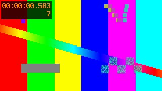
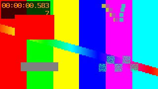

镜头与运镜
检测切点、提取关键帧，给出有依据的运动估计。不把人物运动直接当成摄像机运动。
开源 · 本地处理 · v0.3.0 公开测试版
解析单个视频，检测镜头、估计运镜、提取台词。按原比例整理成4—15秒单元，在离线报告里补充画面观察。也保留双视频逐帧比较。


待检参考解析与比较
检测切点、提取关键帧，给出有依据的运动估计。不把人物运动直接当成摄像机运动。
优先提取字幕，或在本机识别语音。按原比例生成4—15秒单元，编辑并导出逐片段解析。
比较导出或压缩前后的视频，定位像素、帧数和时间差异，保留 CSV 与 JSON 证据。
开始使用
WINDOWS 桌面版
FrameCheck.exe，点击“检查环境”。缺少 FFmpeg 时，双击包内的 安装FFmpeg.cmd 并按提示安装。解析单个视频：点击“解析单个视频”，先运行“解析示例”。对比示例故意制造差异，FAIL 是预期结果。
全部下载文件与 SHA-256 校验和 →PYTHON · WINDOWS / MACOS / LINUX
在 Python 3.10+ 虚拟环境中安装；另需 FFmpeg 5.1+ 与 ffprobe。
python -m pip install "eleven-framecheck[analysis,speech] @ https://github.com/lqeleven520-code/framecheck/releases/download/v0.3.0/eleven_framecheck-0.3.0-py3-none-any.whl"
framecheck doctor
framecheck demo -o demo-001打开输出目录内的 report/report.html。检查自己的视频：
framecheck compare reference.mp4 candidate.mp4 -o reports/check-001
framecheck analyze video.mp4 -o reports/analysis-001FOR CODING AGENTS
独立技能包内含同版本的 FrameCheck 源码，供 Codex、Claude Code 等助手直接调用。无需另下载 FrameCheck 运行包；首次使用需准备 Python、FFmpeg 和所选功能的依赖。支持单视频解析及双视频比较。
使用边界
PASS 表示所选范围内的技术指标符合容差；FAIL 表示比较完成但发现差异；ERROR 或 CANCELLED 表示没有完成检查。限制帧数时，报告会标明只检查了部分范围。
引擎自动检测镜头、估计运动、提取台词与观察帧。画面风格、人物动作和神态等语义内容需要用户或视觉助手实际查看后填写，默认空白明确表示未分析。逐片段格式只保留画面风格和观察字段，不含视频接续方法或私人制作流程。查看解析示例。
比较在本机运行，媒体不上传。生成的报告包含文件名和部分截图；分享前请检查这些内容，并保留整个报告目录。
先点击“检查环境”。如果自动识别失败，在界面选择 ffmpeg.exe，并确认 ffprobe.exe 与它在同一目录。也可把完整的 FFmpeg bin 目录放在桌面程序旁的 ffmpeg/bin 中。FFmpeg 官方下载入口提供各系统的获取方式。
通过 GitHub 的使用问题或使用反馈表单提交复现步骤。framecheck doctor --json 可提供不含本地路径的版本信息。提交反馈 →
欢迎提供可复现的问题和真实使用场景，帮助确定下一项改进。